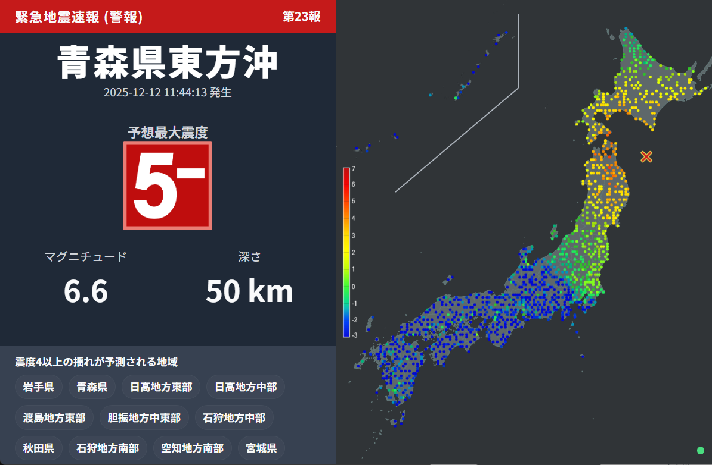
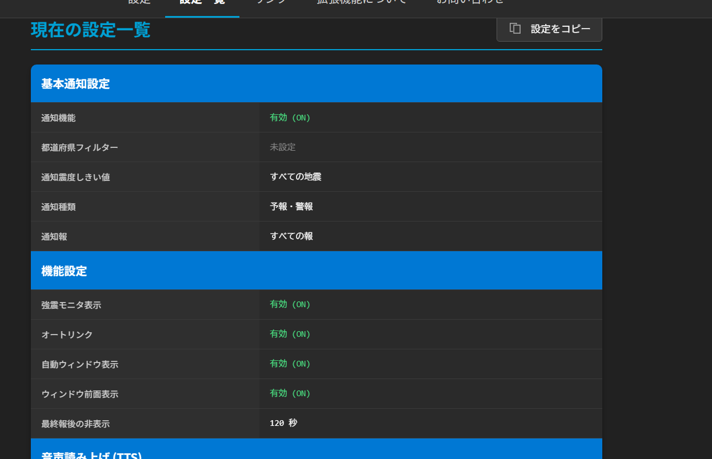
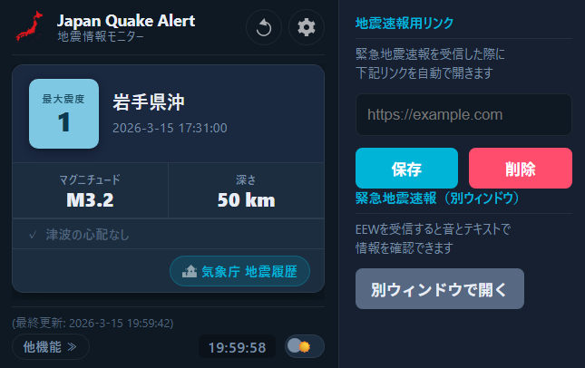

Chrome 拡張機能 — 完全無料
地震発生時、ブラウザを開いていれば即座に警報を受け取れます。
視認性の高いポップアップと音声で、あなたの安全行動をサポートします。
※Chromeウェブストアへ移動します
Features
01
緊急地震速報を受信すると、予想最大震度、マグニチュード、震源の深さなどの詳細情報を瞬時に表示します。 地図上には揺れの予測地域や、リアルタイムな震度分布（強震モニタ）が色分けで表示され、状況を一目で把握できます。

02
通知する震度のしきい値、対象とする都道府県、通知の種類（予報・警報）などを細かく設定可能です。 音声読み上げ(TTS)のオン・オフや、ウィンドウの表示方法など、利用環境に合わせた柔軟な設定ができます。

03
ブラウザのツールバーから、直近の地震情報をいつでも確認できます。 また、緊急地震速報受信時に、あらかじめ設定しておいた防災関連のリンクを自動で開く機能も搭載。 必要な情報へ即座にアクセスできます。
